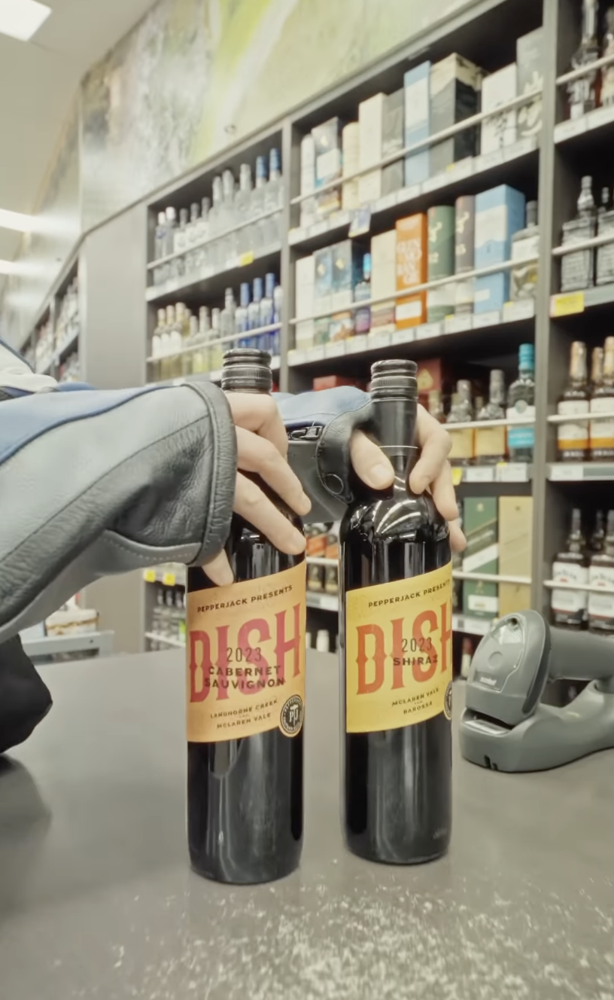

15th Day
Made another cityscape video today. I was allowed creative freedom. Ther intention with the cityscape videos it to utilise the leftover b-roll videos with have of melbourne city the videograohers have taken over the last few months.
16th Day
Today I worked on the footage annotation for the BYO series. Since this partnership involved liquor I had to highlight and note any legal issues that could come up with certain clips. I learnt the media requirements when dealing with liquor companies and I contributed to the footage organisation of the BYO episode.
Link to Final Instagram Reel17th Day
I contunied with the footage orgainsation for the BYO series. I learned that providing as much infonmation (well formatted) is very important. Passing over infonation well formatted is very important to create a snooth seamless handover process. I achieved further progress in the google sheet and contrubted to the task for the BYO series.